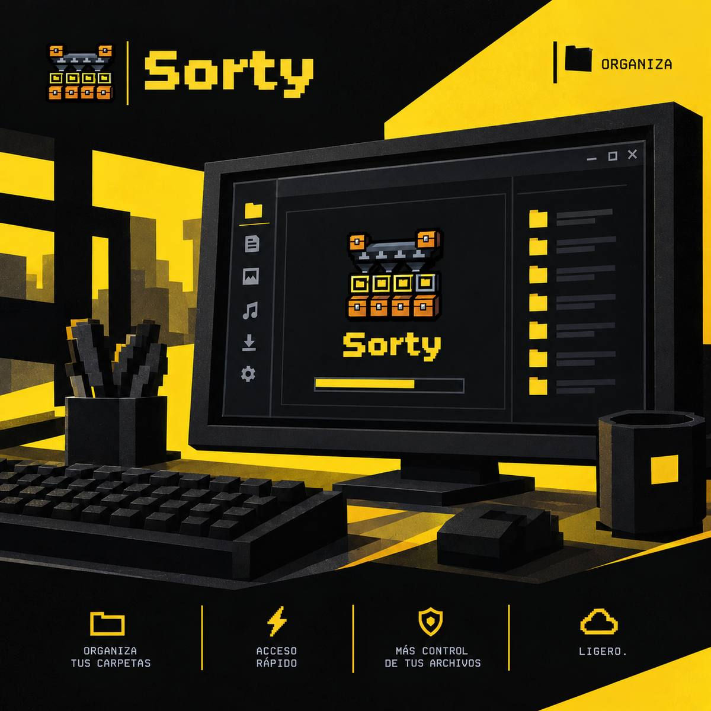
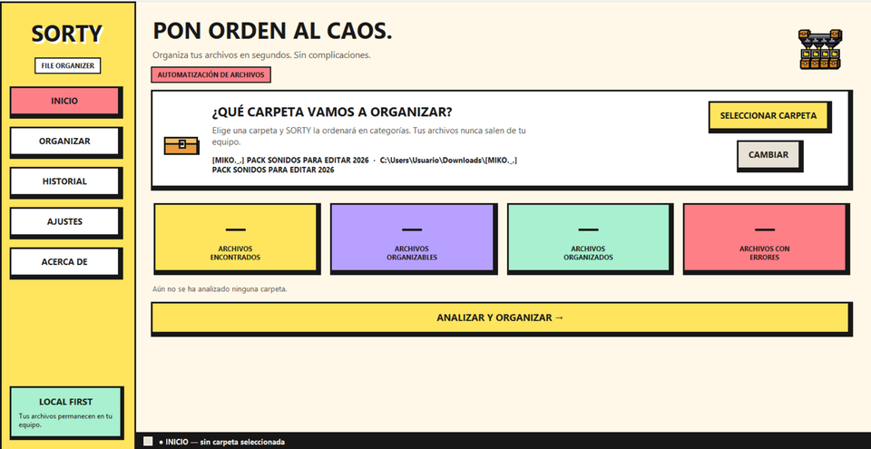
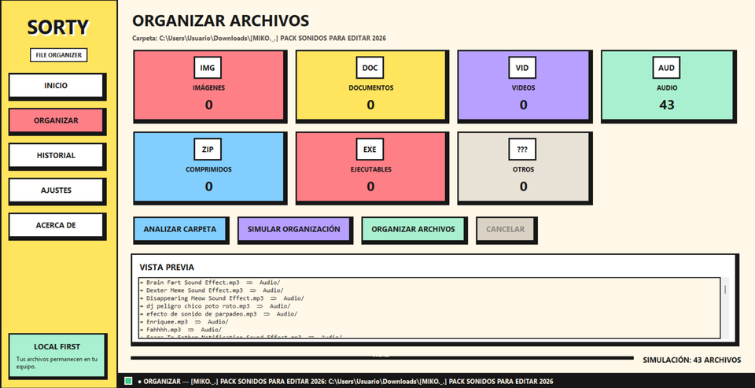
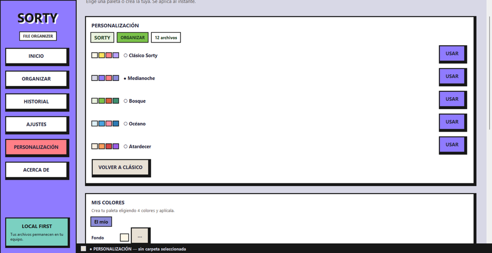
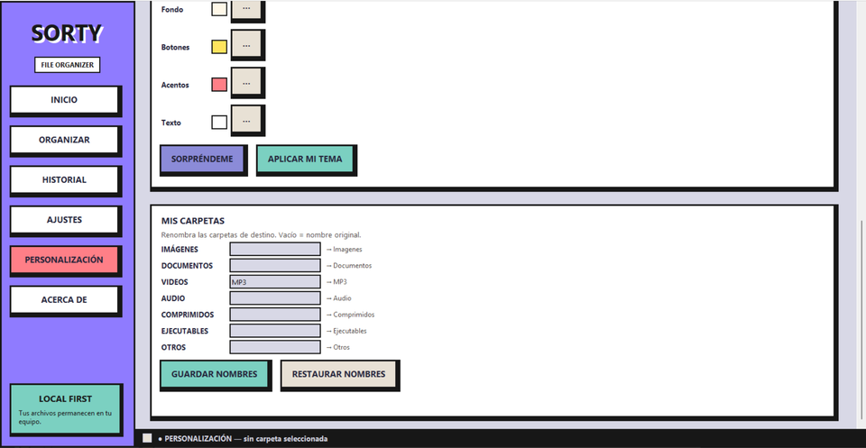
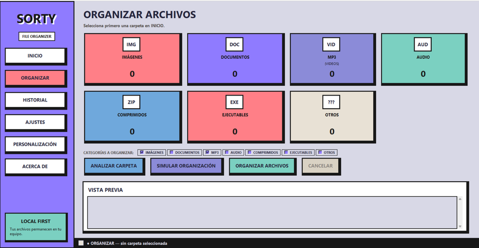

Elige tu carpeta
Selecciona cualquier carpeta (o arrástrala a la ventana) y SORTY la analiza al instante.
Organiza tus archivos en segundos. Sin complicaciones.
La descarga aún no está publicada. Vuelve pronto o mira el código fuente.



Selecciona cualquier carpeta (o arrástrala a la ventana) y SORTY la analiza al instante.
Imágenes, documentos, videos, audio, comprimidos, ejecutables y otros. Sin tocar subcarpetas, salvo que actives el modo recursivo.
La simulación muestra cada movimiento sin tocar el disco. Confirmas solo si te convence.
Si un nombre ya existe, se crea “archivo (1).ext”. Nada se borra ni se reemplaza jamás.
Cada operación queda registrada y puedes devolver los archivos a su lugar desde el Historial.
Español, English y Português, con cambio al instante desde Ajustes.
SORTY trabaja 100 % en local: no tiene cuentas, no usa red y no envía nada a ningún servidor (verificado: el programa no contiene código de red). Tus ajustes e historial se guardan solo en tu equipo, en la carpeta de datos del usuario. Nunca se elimina ni se sube ningún archivo.
Sorty.exe (≈ 11.9 MB).Requisitos: Windows 10 u 11 de 64 bits. No necesita permisos de administrador.
Organización automática con simulación, confirmación, deshacer e historial.
Lo nuevo de la 1.1.0, capturado directamente del programa.



SORTY es gratuito para uso personal. El programa se distribuye como ejecutable; el código fuente no es público. Todos los derechos reservados © Nxttomorrow.